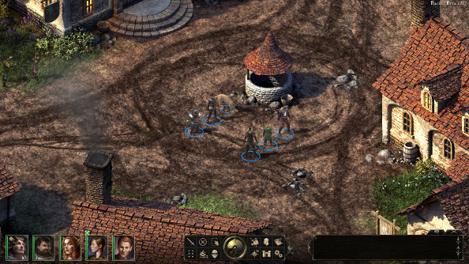
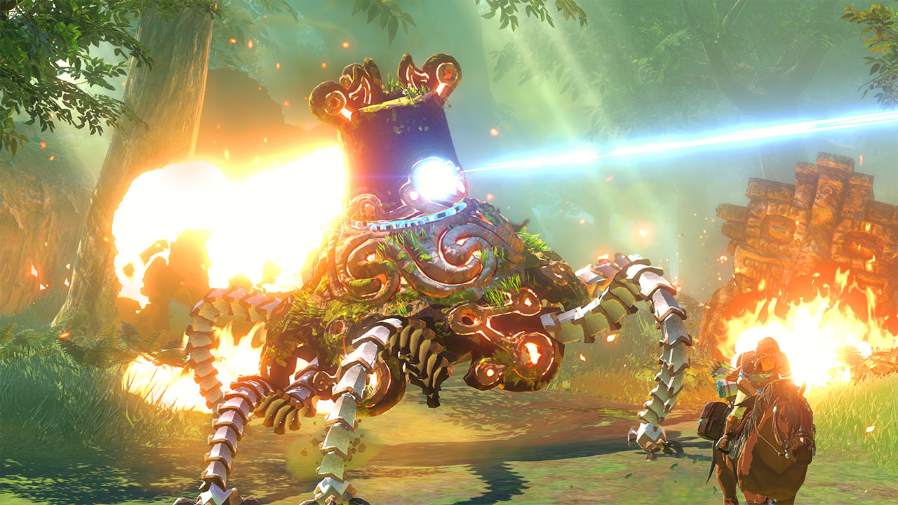
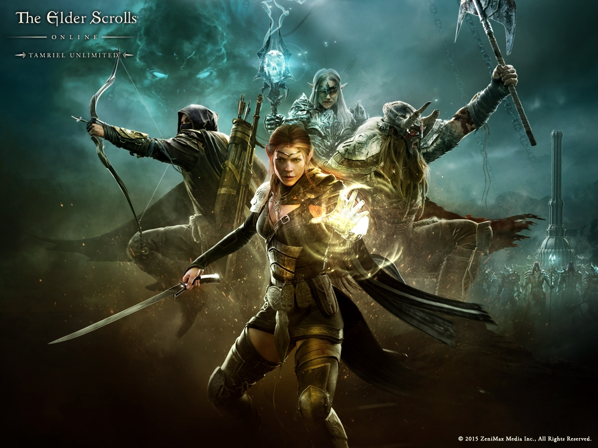
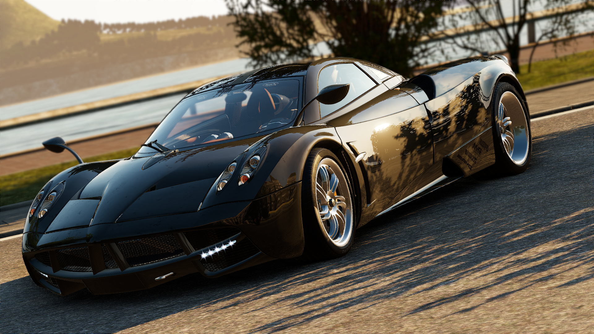

|
|
 1. Grand Theft Auto V 10 |
 6. Mortal Kombat X 8.4 |
 2. Bloodborne 9.1 |
 7. Titan Souls 8 |
 3. Pillars of Eternity 9 |
 8. Neverwinter 7.3 |
 4. Xenoblade Chronicles 8.7 |
 9. Life is Strange Episode 2 7 |
 5. MLB 15: The Show 8.5 |
 10. RBI Baseball 15 4.9 |
 1. The Witcher 3: Wild Hunt May 19 |
 6. Wolfenstein:The Old Blood May 5 |
 2. Persona 5 TBA 2015 |
 7. The Legend of Zelda Wii-U TBA |
 3. ESO: Tamriel Unlimited Jun 9 |
 8. MGS V: The Phantom Pain Sept 1 |
 4. Kingdom Hearts III TBA |
 9. Batman: Arkham Knight Jun 23 |
|  5. Project CARS May 12 |
 10. State of Decay: Year One Survival Edition Apr 28 |